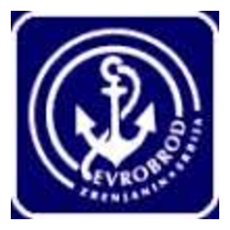
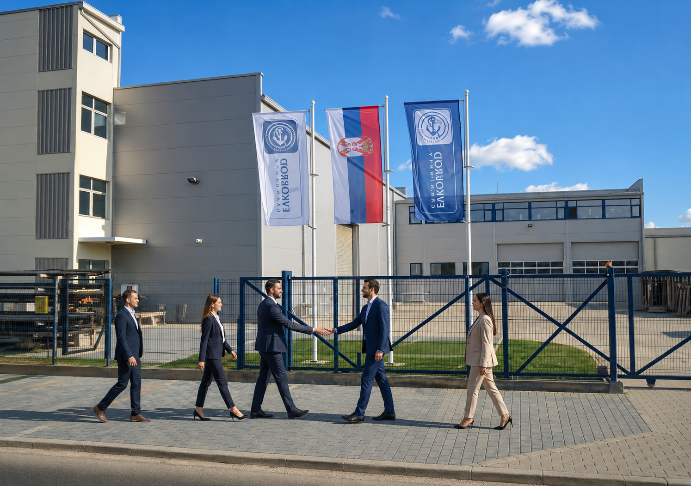

Pouzdan partner u brodogradnji i procesnoj opremiA reliable partner in shipbuilding and process equipment
Izrada, montaža i remont procesne opreme za prehrambenu, naftnu i hemijsku industriju — po najvišim standardima kvaliteta.Fabrication, installation and overhaul of process equipment for the food, oil and chemical industries — to the highest quality standards.

Iskustvo kojem industrija verujeExperience the industry trusts
Evrobrod je proizvodno preduzeće specijalizovano za brodogradnju i izradu, montažu i remont procesne opreme. Sopstvenim kapacitetima i iskusnim inženjerskim timom realizujemo projekte za prehrambenu, naftnu i hemijsku industriju — od pojedinačnih posuda pod pritiskom do kompletnih tehnoloških linija uključujući cevovode, izradu i montažu čeličnih konstrukcija u građevinarstvu, kao i pružanje različitih usluga iz oblasti mašinskih, mehaničarskih i montersko-bravarsko-zavarivačkih radova.
Preduzeće su osnovali inženjeri i majstori, koji su radeći na veoma značajnim objektima i poslovima stekli znanja i iskustva i ista uložili kao osnovni kapital EVROBROD-a. Svakodnevnim prenošenjem tih znanja na mlade kadrove, kao i primenom novih tehnologija, stalno unapređujemo stručnu i kvalifikacionu strukturu zaposlenih.
Iz godine u godinu beležimo stalni rast poslovnih prihoda i povećanje broja zadovoljnih klijenata, što u potpunosti pokazuje potencijal koji EVROBROD poseduje.
Od samog osnivanja smo otvoreni za svaku vrstu saradnje i proširenje broja poslovnih partnera kako u zemlji tako i inostranstvu.
Evrobrod is a manufacturing company specialised in shipbuilding and the fabrication, installation and overhaul of process equipment. With our own capacity and an experienced engineering team we deliver projects for the food, oil and chemical industries — from individual pressure vessels to complete process lines, including pipelines, the fabrication and installation of steel structures in construction, as well as a range of mechanical, fitting and locksmith-welding services.
The company was founded by engineers and craftsmen who gained their knowledge and experience working on highly significant facilities and projects, and invested it as the core capital of EVROBROD. By passing that knowledge on to younger staff every day and applying new technologies, we continually improve the professional and qualification structure of our employees.
Year after year we record steady growth in business revenue and an increasing number of satisfied clients, which fully demonstrates the potential EVROBROD holds.
Since our very founding we have been open to every form of cooperation and to expanding our network of business partners, both at home and abroad.


UslugeServices
Procesna opremaProcess equipment
Posude pod pritiskom, rezervoari, skladišta.Pressure vessels, tanks, storage facilities.
Čelične konstrukcijeSteel structures
Čelični elementi i konstrukcije objekata.Steel elements and building structures.
CevovodiPipelines
Izrada svih vrsta cevovoda.Fabrication of all types of pipelines.
BrodogradnjaShipbuilding
Izgradnja i remont manjih brodova, katamarana, splavova i sličnih plovnih objekata.Construction and overhaul of smaller ships, catamarans, rafts and similar vessels.
Opremanje pogonaPlant fit-out
Montaža i demontaža opreme.Installation and dismantling of equipment.
Remont pogonaPlant overhaul
Cevni registri.Pipe registers.
{{ sel.desc }}
{{ s.text }}
Sertifikati i standardiCertificates and standards
Popunite formu i vaš upit će biti pripremljen za slanje na dragandza@gmail.com.Fill in the form and your enquiry will be prepared for sending to dragandza@gmail.com.